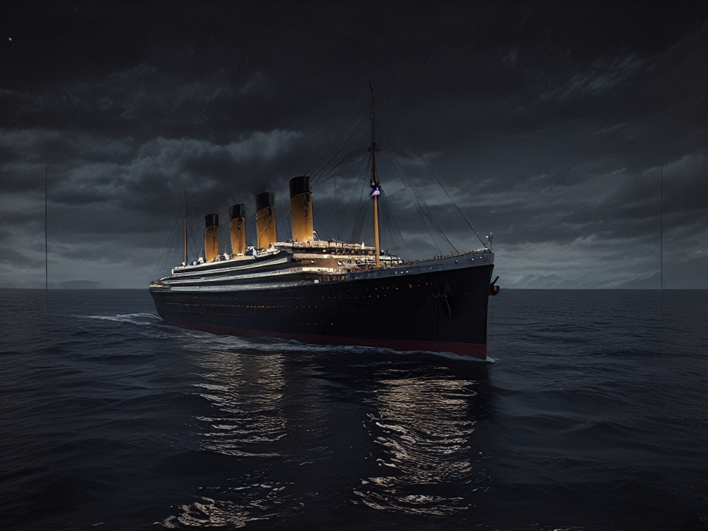

Outpaint အင်္ဂါရပ်ကို အသုံးပြုရန် အကြံပြုချက်များ
AiCasso ၏ Outpaint အင်္ဂါရပ်သည် သင်၏ပုံကို အသစ်ထည့်သွင်းခြင်း သို့မဟုတ် ရှိပြီးသားကို တိုးချဲ့ခြင်းဖြင့် တိုးချဲ့နိုင်သည်။ သင်လိုချင်သောအရာကို ဖေါ်ပြပါ၊ AiCasso သည် အခြားအရာများကို စီမံခန့်ခွဲပါလိမ့်မည်။
ဒါက ဘယ်လိုလုပ်သလဲ:
သင်၏ပြောင်းလဲမှုကို ဖေါ်ပြပါ:
သင်ထည့်သွင်းလိုသောအရာ သို့မဟုတ် တိုးချဲ့လိုသောအရာကို ရိုက်ထည့်ပါ၊ AiCasso သည် အပြောင်းအလဲများကို လျှောက်ထားပါလိမ့်မည်။ သင်သည် ဘယ်ဘက်၊ ညာဘက်၊ အထက် သို့မဟုတ် အောက်ဘက်ကဲ့သို့သော လမ်းညွှန်ချက်များကို သတ်မှတ်နိုင်ပြီး၊ zooming out သို့မဟုတ် panning ကဲ့သို့သော အသေးစိတ်များကိုလည်း သတ်မှတ်နိုင်သည်။
ဥပမာ ပြင်ဆင်မှုများ:
ဥပမာ ၁: "အခြားဘက်တွင် iceberg တစ်ခု ထည့်ပါ၊ ဘာသာပြန်မှုအချက် ၀.၄ ကို အသုံးပြုပါ။"
ရလဒ်: AiCasso သည် ပုံကို ညာဘက်သို့ တိုးချဲ့ပြီး iceberg တစ်ခု ထည့်သွင်းသည်၊ ရှိပြီးသား သဘာဝအရောင်နှင့် ကိုက်ညီစွာ ထားရှိသည်။
ဥပမာ ၂: "Zoom out လုပ်ပါ၊ ညအခါတွင် အမှောင်ရေ၏ အဆင့်ကို ထိန်းသိမ်းပါ။"

ရလဒ်: ပုံသည် zoom out လုပ်ပြီး အမှောင်ရေကို ပိုမိုဖော်ပြသည်၊ ညအခါ၏ အထိမ်းအမှတ်ကို ထိန်းသိမ်းထားသည်။
အပိုဆောင်း ရွေးချယ်မှုများ
သင်၏ပြင်ဆင်မှုများကို အထူးပြုရန် အသုံးပြုနိုင်သော ရွေးချယ်မှုများမှာ:
- အနုတ်လက္ခဏာ: ပုံတွင် မလိုချင်သော အရာတစ်ခုရှိပါက၊ AiCasso သို့ ဤနေရာတွင် ပြောပြနိုင်သည်။ ဥပမာ၊ သင်သည် အရောင် သို့မဟုတ် အရာဝတ္ထုများကို ထည့်သွင်းခြင်းမှ ရှောင်ရှားလိုနိုင်သည်။
- လမ်းလျှောက်ပုံ: ဤသည်သည် ပုံသည် ဘယ်ဘက်၊ ညာဘက်၊ အထက်၊ အောက် သို့မဟုတ် နောက်ပြန် (zoom out လုပ်သည်) သို့ မည်သို့ တိုးချဲ့မည်ကို ဆုံးဖြတ်သည်။ ဥပမာ၊ ညာဘက်သို့ panning လုပ်ရန် 'ညာဘက်' ကို ရွေးချယ်ပါ။
- ဘာသာပြန်မှုအချက်: ဤသည်သည် ပုံသည် တိုးချဲ့မှုအတွင်း တစ်ကြိမ်ချင်းစီတွင် မည်မျှလှုပ်ရှားမည်ကို ထိန်းချုပ်သည်။ အမြင့်တန်ဖိုးသည် ပုံကို ပိုမိုလှုပ်ရှားစေပြီး အသစ်ထည့်သွင်းသော အကြောင်းအရာများကို ပိုမိုဖော်ပြသည်။ အခြေခံသည် ၀.၀၅ ဖြစ်သော်လည်း ၀ မှ ၁ အထိ ပြင်ဆင်နိုင်သည်။
- တစ်ကြိမ်ချင်းစီတွင် အကျယ်/အမြင့် ဘာသာပြန်မှု: ဤသည်သည် ပုံသည် တစ်ကြိမ်ချင်းစီတွင် အကျယ် (width) သို့မဟုတ် အမြင့် (height) မည်မျှလှုပ်ရှားမည်ကို ထိန်းချုပ်သည်။ အခြေခံသည် တစ်ကြိမ်ချင်းစီ ၃၂ pixels ဖြစ်သော်လည်း သင်သည် ပုံကို ဘယ်လောက်လှုပ်ရှားစေချင်သည်ကို အခြေခံ၍ ပြင်ဆင်နိုင်သည်။
- Inference သို့မဟုတ် Denoising အဆင့်အရေအတွက်: ဤသည်သည် AiCasso သည် နောက်ဆုံးပုံရိပ်ကို ရရှိရန် မည်မျှပြင်ဆင်မှုများ ပြုလုပ်မည်ကို ဆုံးဖြတ်သည်။ အဆင့်များ ပိုများလာသည်နှင့်အမျှ ရလဒ်သည် ပိုမိုချောမွေ့လာပြီး အခြေခံသည် ၂၀ အဆင့်ဖြစ်သော်လည်း ၅၀ အထိ တိုးမြှင့်နိုင်သည်။
- Interpolation အဆင့်အရေအတွက်: ဤသည်သည် တစ်ခုတည်းသော တိုးချဲ့မှုတွင် နှစ်ခုသော လမ်းညွှန်ချက်များအကြား မည်မျှချောမွေ့စွာ ပြောင်းလဲမှုဖြစ်မည်ကို ထိန်းချုပ်သည်။ အခြေခံသည် ၆၀ ဖြစ်သော်လည်း ၁၂၀ အထိ တိုးမြှင့်နိုင်သည်။
ဤဆက်တင်များသည် ရွေးချယ်မှုဖြစ်သည်ကို မှတ်သားပါ။ AiCasso သည် သင်၏ သဘာဝဘာသာစကားဖေါ်ပြချက်နှင့် ကောင်းစွာ လုပ်ဆောင်ရန် ဒီဇိုင်းဆွဲထားသည်။ သင်၏ပုံအတွက် အကောင်းဆုံး အလုပ်လုပ်သောအရာကို စမ်းသပ်ရန် အခွင့်အရေးယူပါ!